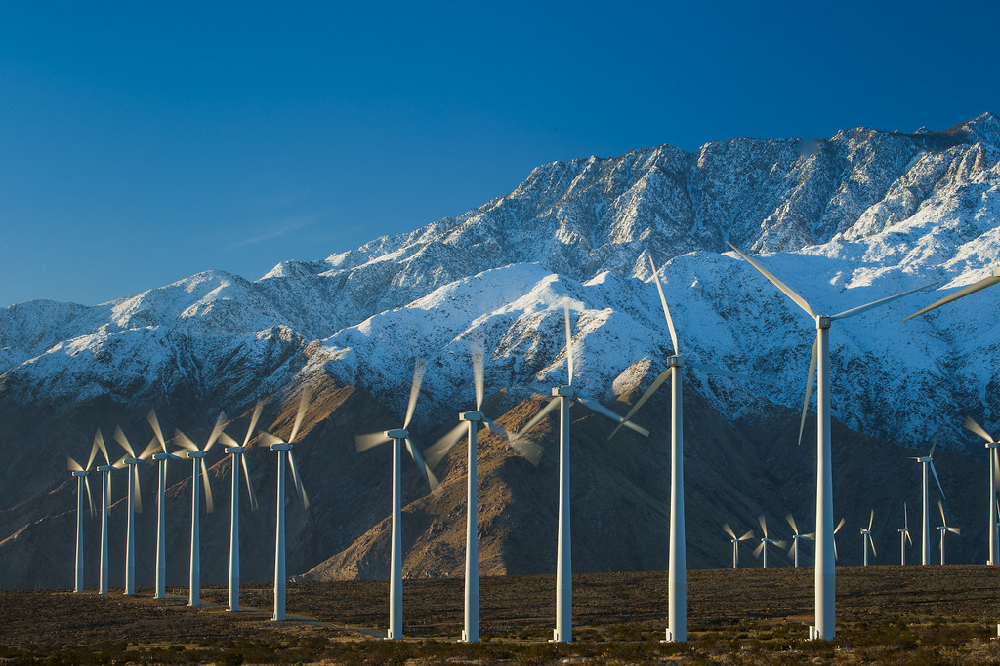
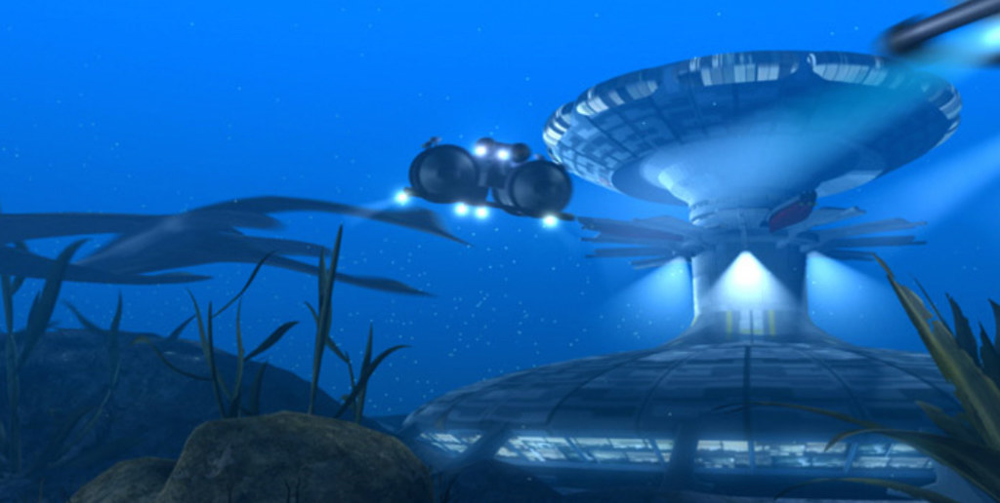

The year is 2146. The increasing effects of climate change have led to rising global temperatures. In addition to wide areas of equatorial land becoming too hot to support life, the ice caps and glaciers across the world have all melted, resulting in vast coastal submersions of cities and civilizations. Following on from the widespread deaths, riots and panics caused by devastating weather conditions: tornadoes, tidal waves, and endless droughts; mankind has started to regroup and rebuild. While some populations have withdrawn to a higher, protected ground, other groups have decided to exploit the seas, now adjusting to the changed salinity and higher levels, and providing a rich source of food and energy.
With several regions still unsafe to re-occupy due to radiation remaining from nuclear power station meltdowns, the majority of the world’s energy is now sourced from renewable sources. Most oceanic energy comes from geothermal sources deep in the ocean beds, harvested in highly pressurized, protected dome facilities. This energy fuels industry and business, while residential energy is generated from tidal power farms and massive floating solar arrays.
The older nations have fragmented and recombined, creating new joint oceanic nations. Their populations are distributed across a network of pressurized undersea cities – domes on the ocean floor, mainly given over to power generation and heavy industry; residential habitats based underwater and some distance offshore, to minimize the effects of the continuing storm patterns – these habitats also are generally linked with aquatic food farming and service industries.
Finally, on the surface, clinging to the final remnants of island archipelagoes, or the ruins of the great coastal cities of the past, are the frontiers of the new civilizations - trading posts with the remaining land-bound populations, centres for land-based agriculture, and offering tourism and heritage sites highlighting the best (and worst) of the old world. Piracy and black markets are rife in these frontier communities that survive through creative repurposing of salvage in the face of a humanitarian crisis. Civil unrest is common, and there is an active insurgency.
Given the nature of these new nations, high-speed and reliable transport systems have become an essential part of the infrastructure. The lower populations coupled with clean renewable energy sources mean that the habitats have been linked with high-speed mag-lev lines, protected within high-tensile transparent tubes that allow the passengers to look out at the surrounding ocean as they pass through and above it.
The joint oceanic nations have developed new currencies that celebrate their heritage and indicate their aspirations for the future. Some banknotes have been in continuous use for many years, and the marks of wear and use are evident. The Complex-Maglev International Subsea Transport network (C-MIST) requires passengers to carry swipe cards (C-MIST Cards) giving access to services, and, due to ongoing unrest.
Currency, travel and ID transactions also take place digitally using portable electronic media devices (e-me). Public areas such as the undersea maglev terminals display prominent motion posters (mo-po) and print media (prim) as a way to mobilise support for subsea settlement and advertise tourism and heritage sites. The insurgency factions see this as propaganda activity and culture jamming is common.
The nation regions are:
- A: Forth Collective (Edinburgh / North Sea)
- B: Eastern Seaboard (New York / Boston)
- C: Concordian Union (Buenos Aires / Paraguay River Basin)
- D: Johor Coalition (Singapore / Malaysia)
- E: Nile Kingdom (Cairo / Nile River Delta)
- F: Ingermanmore (St Petersburg / Baltic)
- G: Khambat Pradesh (Mumbai Coast)
- H: Yangtze Archipelago (Shanghai)
- I: Meldelaide (Melbourne / Adelaide)
For this assignment, I was assigned to the Eastern Seaboard.